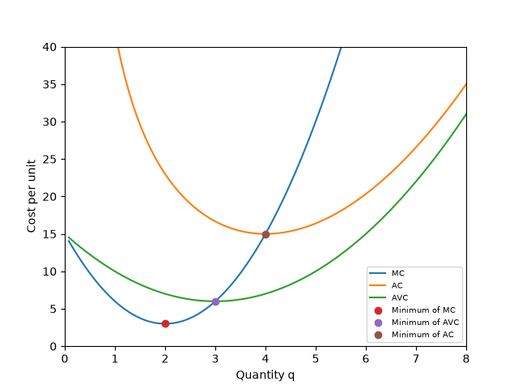
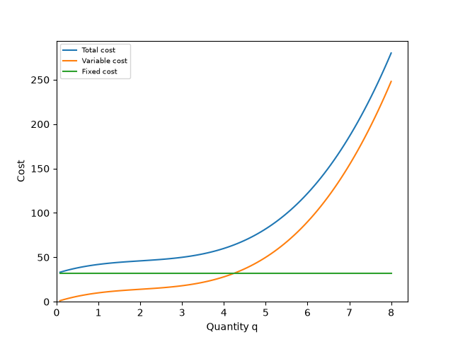

第 5 章: 費用曲線¶
5.1 この章の地図¶
第 1 部では、消費者の選択から、需要曲線を導きました。第 2 部では、企業の選択から、供給曲線を導きます。その出発点が、費用です。企業は、作る量が増えると、費用が増えます。この費用が、どう増えるかが、供給を決めます。
この章では、総費用の式から、限界費用（MC）・平均費用（AC）・平均可変費用（AVC）の 3 本の曲線を作り、3 本の曲線の最低点の位置関係（MC は、AVC と AC の最低点を通る）を、確かめます。この章で、NumPy を導入します。

| 項目 | 内容 |
|---|---|
| 経済学の題材 | 総費用・可変費用・固定費用、限界費用・平均費用・平均可変費用、3 本の関係（最低点の順） |
| 使う Python の機能 | dataclass（frozen=True、__post_init__ で入力のチェック）、関数、リスト内包表記、テスト（pytest） |
| 新しく導入するライブラリ | NumPy（np.linspace・np.argmin・np.gradient・np.asarray） |
| 完成形 | CostCurve、total_cost、variable_cost、marginal_cost、average_cost、average_variable_cost、marginal_cost_by_gradient、argmin_of、cost_minima |
| ファイル | 実装: lib/chapter05/cost.py、lib/chapter05/plot.py（図）／テスト: test/chapter05/test_cost.py、test/chapter05/test_plot.py（自分で書くときは、practice/chapter05/ に、同じ名前で作ります） |
| データ | なし（手計算できる小さな例だけ） |
経済学の式とコードの対応¶
| 経済学 | 式 | コード |
|---|---|---|
| 総費用 | C(q) = a·q³ + b·q² + c·q + F（F は固定費用） | total_cost(curve, q) |
| 可変費用 | VC(q) = C(q) − F | variable_cost(curve, q) |
| 限界費用 | MC = C'(q) = 3a·q² + 2b·q + c | marginal_cost(curve, q) |
| 平均費用 | AC = C(q) ÷ q | average_cost(curve, q) |
| 平均可変費用 | AVC = VC(q) ÷ q | average_variable_cost(curve, q) |
| 3 本の最低点 | MC・AVC・AC が最小になる q と値 | cost_minima(curve) |
前提とする章¶
| できること | 場所 |
|---|---|
関数・dataclass・テストを書く |
第 1 シリーズの第 1〜6 章 |
| 第 1 部の道具（最低点を探す、格子点の探索） | この連載の第 2 章（格子点の探索） |
この章から、前の章の関数に依存せず、企業の費用を、新しく始めます。
5.2 準備¶
この章から、NumPy を使います。uv sync で、入ります。
cd apps/micro-basics-programming/python
uv sync
uv run pytest test/chapter05
42 passed
自分でコードを書くときは、practice/chapter05/ に、cost.py と test_cost.py を作ります（この記事の読み方を参照）。
5.3 予想する¶
総費用が C(q) = q³ − 6q² + 15q + 32（q は生産量、32 は固定費用）の企業がいます。紙で、手計算で答えてください。答えは、この節には書いてありません。「プログラミング」の節の「予想の答え合わせ」で、プログラムを動かして確かめます。
- q = 0・2・5 のときの総費用は、それぞれ、いくつですか
- q = 2・3・4 のときの限界費用（MC = 3q² − 12q + 15）は、それぞれ、いくつですか
- q = 4 の平均費用と、q = 3 の平均可変費用は、いくつですか。q = 3 で、限界費用と平均可変費用を比べると、どうですか
- MC・AVC・AC が最小になる生産量は、それぞれ、いくつですか（小さい順に並べてください）。そのときの値は、いくつですか
5.4 費用曲線の考え方¶
3 つの費用¶
- 固定費用（FC）: 生産量に依らず、かかる費用（工場の賃料など）。作らなくても、かかる
- 可変費用（VC）: 生産量とともに、増える費用（原材料など）
- 総費用（TC） = 固定費用 + 可変費用。逆 S 字の形（増え方が、はじめは急で、次第に緩やかになり、のち再び急に）になることが、多い
3 つの「1 単位あたり」の費用¶
| 費用 | 定義 | グラフでの見え方 |
|---|---|---|
| 限界費用（MC） | 1 単位追加で、増える費用 = 総費用の微分 | 総費用曲線の接線の傾き。固定費用とは、無関係 |
| 平均費用（AC） | 総費用 ÷ 生産量 | 原点からの直線の傾き |
| 平均可変費用（AVC） | 可変費用 ÷ 生産量 | 固定費の切片からの直線の傾き。いつも AC より下 |
限界費用は、逆 S 字の総費用では、はじめは減り、のち増える（U 字型）です。平均費用が逓減する範囲を規模の経済と言います（範囲の経済は、製品の幅の話で、別のものです）。
3 本の関係¶
MC は、AVC の最低点と、AC の最低点を通る
平均は、限界が平均より低い間は下がり、高くなると上がります。だから、限界が平均と交わる点が、平均の最低点です。最低点の順は、MC → AVC → AC（q の小さい順）です。
5.5 プログラミング¶
NumPy を、なぜ使うのか¶
最低点を探すには、たくさんの点で値を計算して、最小の点を選びます。リストと for 文でも書けますが、NumPy を使うと、短く、速く書けます。この章で使う道具は、次の 4 つです。
np.linspace(a, b, n): a から b までを、n 点に等分した、配列を作るnp.argmin(values): 値の並びの、最小値の位置（同じ値が複数あれば、先の位置）np.gradient(y, x): y を x で、数値微分した、並びを返す（総費用から、限界費用を求める）np.asarray(values, dtype=float): リストを、配列にする
配列は、リストと違って、1 つの型（ここでは、浮動小数点数）の値が、並んだものです。
Red: 総費用と限界費用のテスト¶
最初のテストを書きます。総費用 C(q) = q³ − 6q² + 15q + 32 の値は、手計算できます。
import numpy as np
import pytest
from lib.chapter05.cost import (
CostCurve,
argmin_of,
average_cost,
average_variable_cost,
cost_minima,
marginal_cost,
marginal_cost_by_gradient,
total_cost,
variable_cost,
)
CURVE = CostCurve(cubic=1, quadratic=-6, linear=15, fixed=32)
def test_総費用は固定費用と可変費用の和() -> None:
assert total_cost(CURVE, 0) == 32
assert total_cost(CURVE, 2) == 46
assert total_cost(CURVE, 5) == 82
assert total_cost(CURVE, 5) == variable_cost(CURVE, 5) + CURVE.fixed
def test_限界費用は総費用の接線の傾き() -> None:
assert marginal_cost(CURVE, 2) == 3
assert marginal_cost(CURVE, 3) == 6
assert marginal_cost(CURVE, 4) == 15
assert marginal_cost(CURVE, 5) == 30
def test_限界費用は固定費用に依らない() -> None:
bigger = CostCurve(1, -6, 15, 1000)
assert marginal_cost(bigger, 4) == marginal_cost(CURVE, 4)
def test_限界費用は逓減のち逓増のU字型() -> None:
values = [marginal_cost(CURVE, q) for q in (0, 1, 2, 3, 4)]
assert values == [15, 6, 3, 6, 15]
CostCurve などがまだないので、テストは失敗します（Red）。
テストの import の一覧は、完成形の全関数です。自分で書くときは、関数を 1 つ書くたびに、その名前を、import に足していってかまいません（まだ書いていない関数を import すると、ImportError になり、Green になりません）。
Green: 費用関数を実装する¶
費用関数の係数は、dataclass（frozen=True）に、まとめます。3 次の係数が正で、固定費用が 0 以上であることは、__post_init__ で、確かめます。
@dataclass(frozen=True)
class CostCurve:
"""総費用 C(q) = cubic·q³ + quadratic·q² + linear·q + fixed の係数。"""
cubic: float
quadratic: float
linear: float
fixed: float
def __post_init__(self) -> None:
validate_positive(self.cubic, "3 次の係数は、正にする")
validate_non_negative(self.fixed, "固定費用は、0 以上にする")
a, b, c = self.cubic, self.quadratic, self.linear
if c < 0 or (b < 0 and b**2 > 3 * a * c):
raise ValueError(
"限界費用が負になる係数は、扱わない（c ≥ 0、b ≥ 0 または b² ≤ 3ac）"
)
def _check_quantity(q: float) -> None:
validate_non_negative(q, "生産量は、0 以上にする")
def variable_cost(curve: CostCurve, q: float) -> float:
"""可変費用 VC(q) = C(q) − F。生産量とともに増える。"""
_check_quantity(q)
return curve.cubic * q**3 + curve.quadratic * q**2 + curve.linear * q
def total_cost(curve: CostCurve, q: float) -> float:
"""総費用 C(q) = 可変費用 + 固定費用。"""
return variable_cost(curve, q) + curve.fixed
def marginal_cost(curve: CostCurve, q: float) -> float:
"""限界費用 MC = C'(q) = 3a·q² + 2b·q + c。固定費用には依らない。"""
_check_quantity(q)
return 3 * curve.cubic * q**2 + 2 * curve.quadratic * q + curve.linear
import と補助関数（写すときに足す）
記事の抜粋には、import と、先頭が _ の補助関数・定数を、省いています。完成形のファイルの先頭にある、次の部分を、写してください。
lib/chapter05/cost.py
from dataclasses import dataclass
import numpy as np
from numpy.typing import ArrayLike
from lib.chapter01.validation import validate_non_negative, validate_positive
def _check_quantity(q: float) -> None:
validate_non_negative(q, "生産量は、0 以上にする")
lib/chapter05/plot.py
import matplotlib.pyplot as plt
import numpy as np
from matplotlib.figure import Figure
from lib.chapter05.cost import (
CostCurve,
average_cost,
average_variable_cost,
cost_minima,
marginal_cost,
total_cost,
variable_cost,
)
_POINTS = 100
def _grid(q_max: float) -> list[float]:
"""q_max の 100 分の 1 から q_max までを、100 点に等分する（q = 0 は、除く）。"""
return [float(q) for q in np.linspace(q_max / _POINTS, q_max, _POINTS)]
test/chapter05/test_plot.py
from collections.abc import Sequence
from typing import cast
import pytest
from matplotlib.axes import Axes
from matplotlib.lines import Line2D
from lib.chapter05.cost import (
CostCurve,
average_cost,
average_variable_cost,
marginal_cost,
total_cost,
variable_cost,
)
from lib.chapter05.plot import plot_cost_curves, plot_total_cost
作るときに、3 次の係数が正、固定費用が 0 以上であることに加えて、限界費用が負にならないこと（c ≥ 0、b ≥ 0 または b² ≤ 3ac）を検査します。限界費用が負になる係数では、可変費用が負になり、経済として成り立たないためです。
固定費用は、総費用にだけ入り、限界費用の式には、出てきません（test_限界費用は固定費用に依らない）。生産量が負のときは、エラーにします。
平均費用と、平均可変費用¶
平均費用と平均可変費用は、生産量が 0 のとき、求められません（0 で割れない）。エラーにします。0 より大きく 1 未満の生産量（0.5 など）は、有効です。
def test_平均費用は総費用を生産量で割った値() -> None:
assert average_cost(CURVE, 4) == 15
assert average_cost(CURVE, 5) == pytest.approx(16.4)
assert average_cost(CURVE, 3) == pytest.approx(50 / 3)
def test_平均可変費用は可変費用を生産量で割った値() -> None:
assert average_variable_cost(CURVE, 3) == 6
assert average_variable_cost(CURVE, 4) == 7
def test_平均費用はいつも平均可変費用より上() -> None:
for q in (0.5, 1, 2, 3, 4, 8):
gap = average_cost(CURVE, q) - average_variable_cost(CURVE, q)
assert gap == pytest.approx(CURVE.fixed / q)
assert gap > 0
def average_cost(curve: CostCurve, q: float) -> float:
"""平均費用 AC = C(q) ÷ q。生産量が 0 のときは、求められない。"""
validate_positive(q, "平均費用の生産量は、正にする")
return total_cost(curve, q) / q
def average_variable_cost(curve: CostCurve, q: float) -> float:
"""平均可変費用 AVC = VC(q) ÷ q。いつも、平均費用より、固定費用 ÷ q だけ低い。"""
validate_positive(q, "平均可変費用の生産量は、正にする")
return variable_cost(curve, q) / q
平均費用と平均可変費用の差は、固定費用 ÷ q（平均固定費用）で、いつも正です（3 つ目のテスト）。だから、AC は、いつも AVC の上にあります。
限界費用を、数値微分で確かめる¶
限界費用は、総費用曲線の接線の傾きです。総費用を、細かい生産量で並べて、NumPy の勾配（np.gradient）で、傾きを求めて、限界費用の式と比べます。
def test_限界費用は勾配の数値微分と一致する() -> None:
qs = np.linspace(0, 10, 1001)
costs = [total_cost(CURVE, float(q)) for q in qs]
gradient = marginal_cost_by_gradient(costs, qs)
expected = [marginal_cost(CURVE, float(q)) for q in qs]
assert gradient[1:-1] == pytest.approx(expected[1:-1], abs=1e-3)
def marginal_cost_by_gradient(costs: ArrayLike, quantities: ArrayLike) -> list[float]:
"""総費用の並びから、数値微分（NumPy の勾配）で、限界費用を求める。"""
y = np.asarray(costs, dtype=float)
x = np.asarray(quantities, dtype=float)
if y.shape != x.shape:
raise ValueError("総費用と生産量は、同じ長さにする")
return [float(v) for v in np.gradient(y, x)]
端の点は、片側の差分なので、誤差が大きいので、内側の点だけを比べます。内側の点の誤差は、刻みの 2 乗（h² × 3 次の係数）で、刻み 0.01 では、1e-4 です。
3 本の最低点を探す¶
最小の位置を返す argmin_of と、3 本の最低点を探す cost_minima です。生産量を、0 から上限まで、細かく並べて（格子点）、3 本それぞれの最小を探します。
def test_最小値の位置と値() -> None:
assert argmin_of([5, 3, 4], [0, 1, 2]) == (1, 3)
def test_3本の曲線の最低点() -> None:
minima = cost_minima(CURVE)
assert minima["MC"] == pytest.approx((2, 3), abs=1e-3)
assert minima["AVC"] == pytest.approx((3, 6), abs=1e-3)
assert minima["AC"] == pytest.approx((4, 15), abs=1e-3)
def test_最低点の順は限界費用_平均可変費用_平均費用() -> None:
minima = cost_minima(CURVE)
assert minima["MC"][0] < minima["AVC"][0] < minima["AC"][0]
def test_限界費用は平均可変費用と平均費用の最低点を通る() -> None:
minima = cost_minima(CURVE)
q_avc, v_avc = minima["AVC"]
q_ac, v_ac = minima["AC"]
assert marginal_cost(CURVE, q_avc) == pytest.approx(v_avc, abs=1e-2)
assert marginal_cost(CURVE, q_ac) == pytest.approx(v_ac, abs=1e-2)
def argmin_of(values: ArrayLike, positions: ArrayLike) -> tuple[float, float]:
"""値の並びの最小値と、その位置 (位置, 最小値)。同じ値が複数あれば、先の位置。"""
v = np.asarray(values, dtype=float)
x = np.asarray(positions, dtype=float)
if v.shape != x.shape:
raise ValueError("値と位置は、同じ長さにする")
index = int(np.argmin(v))
return float(x[index]), float(v[index])
def cost_minima(
curve: CostCurve, q_max: float = 10.0, points: int = 10001
) -> dict[str, tuple[float, float]]:
"""MC・AVC・AC の最低点 (生産量, 値) を、格子点の探索で求める。"""
validate_positive(q_max, "探索の上限は、正にする")
validate_positive(points - 2, "点の数は、3 以上にする")
grid = np.linspace(0.0, q_max, points)
positive = grid[1:]
minima = {
"MC": argmin_of([marginal_cost(curve, float(q)) for q in grid], grid),
"AVC": argmin_of(
[average_variable_cost(curve, float(q)) for q in positive], positive
),
"AC": argmin_of([average_cost(curve, float(q)) for q in positive], positive),
}
if any(q >= q_max for q, _ in minima.values()):
raise ValueError("最低点が探索の上限に届いた。上限 q_max を大きくする")
return minima
最低点が、探索の上限 q_max に届いたときは、エラーにします（黙って、端の値を返さないためです）。その場合は、q_max を大きくして、探索し直します。
MC・AVC・AC の最低点は、(q, 値) = (2, 3)、(3, 6)、(4, 15) です。限界費用は、AVC の最低点（q = 3）で 6、AC の最低点（q = 4）で 15 となり、それぞれの最低値と、一致します（最後のテスト）。平均費用と平均可変費用は、q = 0 で求められないので、0 を除いた格子点で探します。
予想の答え合わせ¶
予想した答えを、プログラムで確かめます。
このスクリプトは、完成形（
lib/）を読みます。自分のコードで確かめるときは、import を、from practice.chapterNN...に書き換えてください。
from lib.chapter05.cost import (
CostCurve,
average_cost,
average_variable_cost,
cost_minima,
marginal_cost,
total_cost,
)
curve = CostCurve(cubic=1, quadratic=-6, linear=15, fixed=32)
print("総費用 q = 0・2・5:", [total_cost(curve, q) for q in (0, 2, 5)])
print("限界費用 q = 2・3・4:", [marginal_cost(curve, q) for q in (2, 3, 4)])
print("平均費用 q = 4:", average_cost(curve, 4))
print("平均可変費用 q = 3:", average_variable_cost(curve, 3))
minima = cost_minima(curve)
for name in ("MC", "AVC", "AC"):
q, value = minima[name]
print(name, "の最低点:", round(q, 3), round(value, 3))
総費用 q = 0・2・5: [32, 46, 82]
限界費用 q = 2・3・4: [3, 6, 15]
平均費用 q = 4: 15.0
平均可変費用 q = 3: 6.0
MC の最低点: 2.0 3.0
AVC の最低点: 3.0 6.0
AC の最低点: 4.0 15.0
- 1 つ目の問い: 総費用は、q = 0 で 32（固定費用だけ）、q = 2 で 46、q = 5 で 82 です。作らなくても、固定費用 32 は、かかります
- 2 つ目の問い: 限界費用は、q = 2 で 3、q = 3 で 6、q = 4 で 15 です。q = 2 までは減り、それ以降は増える（U 字型）です
- 3 つ目の問い: q = 4 の平均費用は 15、q = 3 の平均可変費用は 6 です。q = 3 で、限界費用（6）と平均可変費用（6）が、等しくなります
- 4 つ目の問い: 最小になる生産量は、MC が 2（値 3）、AVC が 3（値 6）、AC が 4（値 15）で、MC → AVC → AC の順です。MC は、AVC の最低点（q = 3、値 6）と、AC の最低点（q = 4、値 15）を、通ります
図¶
3 本の曲線を描く関数と、座標のテストです。曲線の値が費用関数と一致すること、最低点の印が、(2, 3)・(3, 6)・(4, 15) にあること、AC がいつも AVC の上にあることを、確かめます。
描画のテストと実装（後回しにしても、学習は成り立ちます）
CURVE = CostCurve(1, -6, 15, 32)
def xs(line: Line2D) -> list[float]:
return [float(v) for v in cast(Sequence[float], line.get_xdata())]
def ys(line: Line2D) -> list[float]:
return [float(v) for v in cast(Sequence[float], line.get_ydata())]
def line(ax: Axes, label: str) -> Line2D:
return next(item for item in ax.lines if item.get_label() == label)
def unit() -> Axes:
return plot_cost_curves(CURVE, 8, 40).axes[0]
def test_費用曲線の図の線() -> None:
assert [item.get_label() for item in unit().lines] == [
"MC",
"AC",
"AVC",
"Minimum of MC",
"Minimum of AVC",
"Minimum of AC",
]
def test_曲線は100点で左端は上限の100分の1() -> None:
mc = line(unit(), "MC")
assert len(xs(mc)) == 100
assert xs(mc)[0] == pytest.approx(8 / 100)
assert xs(mc)[-1] == pytest.approx(8)
def test_最低点の印は3本の最低点() -> None:
ax = unit()
for label, (q, value) in (
("Minimum of MC", (2, 3)),
("Minimum of AVC", (3, 6)),
("Minimum of AC", (4, 15)),
):
point = line(ax, label)
assert xs(point) == pytest.approx([q], abs=1e-3)
assert ys(point) == pytest.approx([value], abs=1e-2)
def plot_cost_curves(curve: CostCurve, q_max: float, y_max: float) -> Figure:
"""MC・AC・AVC の 3 本と、最低点を描く。MC は、AVC と AC の最低点を通る。"""
qs = _grid(q_max)
fig, ax = plt.subplots()
ax.plot(qs, [marginal_cost(curve, q) for q in qs], label="MC")
ax.plot(qs, [average_cost(curve, q) for q in qs], label="AC")
ax.plot(qs, [average_variable_cost(curve, q) for q in qs], label="AVC")
minima = cost_minima(curve, q_max)
for name in ("MC", "AVC", "AC"):
q, value = minima[name]
ax.plot([q], [value], "o", label=f"Minimum of {name}")
ax.set_xlabel("Quantity q")
ax.set_ylabel("Cost per unit")
ax.set_xlim(0, q_max)
ax.set_ylim(0, y_max)
ax.legend(fontsize="x-small")
plt.close(fig)
return fig
総費用・可変費用・固定費用を、重ねて描くと、総費用が、可変費用に、固定費用を足したものであることが、見えます。

描画のテストと実装（後回しにしても、学習は成り立ちます）
CURVE = CostCurve(1, -6, 15, 32)
def totals() -> Axes:
return plot_total_cost(CURVE, 8).axes[0]
def test_総費用は可変費用と固定費用の和() -> None:
ax = totals()
for q, tc, vc, fc in zip(
xs(line(ax, "Total cost")),
ys(line(ax, "Total cost")),
ys(line(ax, "Variable cost")),
ys(line(ax, "Fixed cost")),
strict=True,
):
assert tc == pytest.approx(total_cost(CURVE, q))
assert vc == pytest.approx(variable_cost(CURVE, q))
assert tc == pytest.approx(vc + fc)
assert fc == 32
def plot_total_cost(curve: CostCurve, q_max: float) -> Figure:
"""総費用・可変費用・固定費用を描く。総費用 = 可変費用 + 固定費用（逆 S 字）。"""
qs = _grid(q_max)
fig, ax = plt.subplots()
ax.plot(qs, [total_cost(curve, q) for q in qs], label="Total cost")
ax.plot(qs, [variable_cost(curve, q) for q in qs], label="Variable cost")
ax.plot(qs, [curve.fixed for _ in qs], label="Fixed cost")
ax.set_xlabel("Quantity q")
ax.set_ylabel("Cost")
ax.set_xlim(left=0)
ax.set_ylim(bottom=0)
ax.legend(fontsize="x-small")
plt.close(fig)
return fig
ノートブックで試す¶
数字を書き換えて、結果と図が変わるのを、手軽に確かめられます。apps/micro-basics-programming/python/notebooks/ch05_cost_curves.ipynb を開き、「Parameters」のセルの数字（費用関数の係数、固定費用）を書き換えて、上から順に実行します。起動は、アプリのディレクトリで uv run --with jupyterlab jupyter lab notebooks/ です。
実行結果¶
uv run pytest test/chapter05
42 passed
5.6 規則で言うと¶
- 限界費用は、平均費用と平均可変費用の最低点を通る。 限界が平均より低いと、平均は下がり、高いと、上がる
- 固定費用は、限界費用に影響しない。 平均費用にだけ、影響する（AVC に、固定費用 ÷ q を足したものが、AC）
- 最低点の順は、MC → AVC → AC である。
混同しやすい点を、表にまとめます。
| 混同しやすい点 | 違い |
|---|---|
| 限界費用と平均費用 | 限界費用は、追加の 1 単位の費用。平均費用は、全体を割った値。限界が平均を下回る間は、平均は下がる |
| 平均費用と平均可変費用 | AC は、固定費用を含む。AVC は、含まない。差は、固定費用 ÷ q で、q が大きいほど、縮まる |
| 最低点の順 | q の小さい順に、MC・AVC・AC。MC が最も早く最低点に達する |
| 規模の経済と範囲の経済 | 規模の経済は、生産量が増えると、平均費用が下がること。範囲の経済は、製品の幅を広げると、費用が下がること |
このモデルが成り立たない場面¶
- 費用関数は、仮定した式です。 実際の企業の費用は、観察できず、推定するものです。この章の 3 次関数は、逆 S 字の形を、例として表したものです
- 固定費用は、短期の概念です。 長期には、すべての費用が、可変になります
- 投入の価格は、一定と仮定しています。 大量に買えば、割引される（または、値上がりする）企業は、費用の式が変わります
- 最低点は、格子点の探索による、近似です。 格子の幅（上限 ÷ (点の数 − 1)）の分だけ、誤差があります
5.7 練習問題¶
| 種類 | 問題 |
|---|---|
| 想起 | 本文を閉じて、total_cost の最初のテスト（C(0) = 32、C(2) = 46）を書いてください |
| 生成 | 解説を見る前に、平均固定費用（固定費用 ÷ q）を返す average_fixed_cost(curve, q) を、テストから書いてください。q = 4 で、AVC（7）と足すと、AC（15）になります |
| 多様 | 固定費用を 32 から 0 に変えます。平均費用の最低点は、どこになりますか。先に予想してから、確かめてください |
| 交互 | 第 1 シリーズの第 3 章のリスト内包表記で、q = 1〜6 の限界費用を、一度に求めてください。最小になるのは、どの q ですか |
解答（先に自分で取り組んでから、開いてください）
想起:
def test_総費用の最初のテスト() -> None:
curve = CostCurve(1, -6, 15, 32)
assert total_cost(curve, 0) == 32
assert total_cost(curve, 2) == 46
生成: 固定費用を、生産量で割ります。
def average_fixed_cost(curve, q):
return curve.fixed / q
def test_平均費用は平均可変費用と平均固定費用の和() -> None:
curve = CostCurve(1, -6, 15, 32)
assert average_fixed_cost(curve, 4) == 8
assert average_variable_cost(curve, 4) + average_fixed_cost(curve, 4) == average_cost(curve, 4)
多様: 固定費用が 0 なら、AC = AVC です。最低点は、AVC の最低点と同じ q = 3（値 6）になります。固定費用が、AC の最低点を、右（q = 4）へ動かしていたのです。
def test_固定費用0なら平均費用の最低点は平均可変費用と同じ() -> None:
curve = CostCurve(1, -6, 15, 0)
minima = cost_minima(curve)
assert minima["AC"] == pytest.approx((3, 6), abs=1e-3)
assert minima["AC"] == pytest.approx(minima["AVC"])
交互:
def test_限界費用の並びの最小は2() -> None:
curve = CostCurve(1, -6, 15, 32)
values = [marginal_cost(curve, q) for q in range(1, 7)]
assert values == [6, 3, 6, 15, 30, 51]
assert values.index(min(values)) + 1 == 2
5.8 振り返り¶
- うまくいったこと:
- 詰まったこと:
- 次に試すこと:
5.9 まとめ¶
- 総費用 = 固定費用 + 可変費用。限界費用（接線の傾き）・平均費用（原点からの傾き）・平均可変費用（切片からの傾き）の 3 本を、関数にした
- 限界費用は、固定費用に依らず、逆 S 字の総費用では、U 字型。平均費用は、いつも平均可変費用より、固定費用 ÷ q だけ上にある
- 限界費用は、AVC と AC の最低点を通る。最低点の順は、MC（q = 2）→ AVC（q = 3）→ AC（q = 4）
- NumPy の
linspace・argmin・gradientで、最低点を探し、限界費用を数値微分で確かめた
次の章では、費用そのものを、投入の組み合わせ（労働と資本）から導きます。生産関数と、費用を最小にする投入の選択は、第 2 章の効用最大化と、同じ形をしていることが分かります。